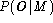
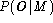

Whereas isolated unit training is sufficient for building whole word models and initialisation of models using hand-labelled bootstrap data, the main HMM training procedures for building sub-word systems revolve around the concept of embedded training. Unlike the processes described so far, embedded training simultaneously updates all of the HMMs in a system using all of the training data. It is performed by HEREST which, unlike HREST, performs just a single iteration.
In outline, HEREST works as follows. On startup, HEREST loads in a complete set of HMM definitions. Every training file must have an associated label file which gives a transcription for that file. Only the sequence of labels is used by HEREST, however, and any boundary location information is ignored. Thus, these transcriptions can be generated automatically from the known orthography of what was said and a pronunciation dictionary.
HEREST processes each training file in turn. After loading it into memory, it uses the associated transcription to construct a composite HMM which spans the whole utterance. This composite HMM is made by concatenating instances of the phone HMMs corresponding to each label in the transcription. The Forward-Backward algorithm is then applied and the sums needed to form the weighted averages accumulated in the normal way. When all of the training files have been processed, the new parameter estimates are formed from the weighted sums and the updated HMM set is output.
The mathematical details of embedded Baum-Welch re-estimation are given below in section 8.7.
In order to use HEREST, it is first necessary to construct a file containing a list of all HMMs in the model set with each model name being written on a separate line. The names of the models in this list must correspond to the labels used in the transcriptions and there must be a corresponding model for every distinct transcription label. HEREST is typically invoked by a command line of the form
HERest -S trainlist -I labs -H dir1/hmacs -M dir2 hmmlistwhere hmmlist contains the list of HMMs. On startup, HEREST will load the HMM master macro file (MMF) hmacs (there may be several of these). It then searches for a definition for each HMM listed in the hmmlist, if any HMM name is not found, it attempts to open a file of the same name in the current directory (or a directory designated by the -d option). Usually in large subword systems, however, all of the HMM definitions will be stored in MMFs. Similarly, all of the required transcriptions will be stored in one or more Master Label Files (MLFs), and in the example, they are stored in the single MLF called labs.
Once all MMFs and MLFs have been loaded, HEREST processes each file in the trainlist, and accumulates the required statistics as described above. On completion, an updated MMF is output to the directory dir2. If a second iteration is required, then HEREST is reinvoked reading in the MMF from dir2 and outputing a new one to dir3, and so on. This process is illustrated by Fig 8.7.
When performing embedded training, it is good practice to monitor the performance of the models on unseen test data and stop training when no further improvement is obtained. Enabling top level tracing by setting -T 1 will cause HEREST to output the overall log likelihood per frame of the training data. This measure could be used as a termination condition for repeated application of HEREST. However, repeated re-estimation to convergence may take an impossibly long time. Worse still, it can lead to over-training since the models can become too closely matched to the training data and fail to generalise well on unseen test data. Hence in practice around 2 to 5 cycles of embedded re-estimation are normally sufficient when training phone models.
In order to get accurate acoustic models, a large amount of training
data is needed. Several hundred
utterances are needed for speaker dependent recognition and
several thousand are needed for
speaker independent recognition. In the latter case, a single
iteration of embedded training
might take several hours to compute. There are two mechanisms for
speeding up this computation. Firstly, HEREST has a pruning
mechanism
incorporated into its forward-backward computation. HEREST calculates
the backward probabilities  first and then the forward probabilities
first and then the forward probabilities
 .
The full computation of these probabilities for all values of state j
and time t is unnecessary since many of these combinations will be highly
improbable. On the forward pass, HEREST restricts the computation of
the
.
The full computation of these probabilities for all values of state j
and time t is unnecessary since many of these combinations will be highly
improbable. On the forward pass, HEREST restricts the computation of
the  values to just those for which the total log likelihood
as determined by the product
values to just those for which the total log likelihood
as determined by the product  is
within a fixed distance from the total likelihood  . This
pruning is always enabled since it is completely safe and causes no loss
of modelling accuracy.
is
within a fixed distance from the total likelihood  . This
pruning is always enabled since it is completely safe and causes no loss
of modelling accuracy.
Pruning on the backward pass is also possible.
However, in this case, the likelihood product  is unavailable since
is unavailable since  has yet to be computed, and hence a
much broader beam must be set to
avoid pruning errors. Pruning on the backward path is therefore under
user control. It is set using the -t option which has two
forms. In the simplest case, a fixed pruning beam is set. For example,
using -t 250.0 would set a fixed beam of 250.0. This method
is adequate when there is sufficient compute time available to
use a generously wide beam. When a narrower beam is used, HEREST will
reject any utterance for which the beam proves to be too narrow.
This can be avoided by using an incremental threshold. For example,
executing
has yet to be computed, and hence a
much broader beam must be set to
avoid pruning errors. Pruning on the backward path is therefore under
user control. It is set using the -t option which has two
forms. In the simplest case, a fixed pruning beam is set. For example,
using -t 250.0 would set a fixed beam of 250.0. This method
is adequate when there is sufficient compute time available to
use a generously wide beam. When a narrower beam is used, HEREST will
reject any utterance for which the beam proves to be too narrow.
This can be avoided by using an incremental threshold. For example,
executing
HERest -t 120.0 60.0 240.0 -S trainlist -I labs \
-H dir1/hmacs -M dir2 hmmlist
would cause HEREST to run normally
at a beam width of 120.0. However, if a pruning
error occurs, the
beam is increased by 60.0 and HEREST reprocesses the offending training
utterance. Repeated errors cause the beam width to be increased
again and this continues until either the utterance is
successfully processed or the upper beam limit is reached, in this
case 240.0. Note that errors which occur at very high beam widths
are often caused by transcription errors, hence, it is best not to
set the upper limit too high.
The second way of speeding-up the operation of HEREST is to use more than one computer in parallel. The way that this is done is to divide the training data amongst the available machines and then to run HEREST on each machine such that each invocation of HEREST uses the same initial set of models but has its own private set of data. By setting the option -p N where N is an integer, HEREST will dump the contents of all its accumulators into a file called HERN.acc rather than updating and outputing a new set of models. These dumped files are collected together and input to a new invocation of HEREST with the option -p 0 set. HEREST then reloads the accumulators from all of the dump files and updates the models in the normal way. This process is illustrated in Figure 8.8.
To give a concrete example, suppose that four networked workstations were available to execute the HEREST command given earlier. The training files listed previously in trainlist would be split into four equal sets and a list of the files in each set stored in trlist1, trlist2, trlist3, and trlist4. On the first workstation, the command
HERest -S trlist1 -I labs -H dir1/hmacs -M dir2 -p 1 hmmlistwould be executed. This will load in the HMM definitions in dir1/hmacs, process the files listed in trlist1 and finally dump its accumulators into a file called HER1.acc in the output directory dir2. At the same time, the command
HERest -S trlist2 -I labs -H dir1/hmacs -M dir2 -p 2 hmmlistwould be executed on the second workstation, and so on. When HEREST has finished on all four workstations, the following command will be executed on just one of them
HERest -H dir1/hmacs -M dir2 -p 0 hmmlist dir2/*.accwhere the list of training files has been replaced by the dumped accumulator files. This will cause the accumulated statistics to be reloaded and merged so that the model parameters can be reestimated and the new model set output to dir2 The time to perform this last phase of the operation is very small, hence the whole process will be around four times quicker than for the straightforward sequential case.